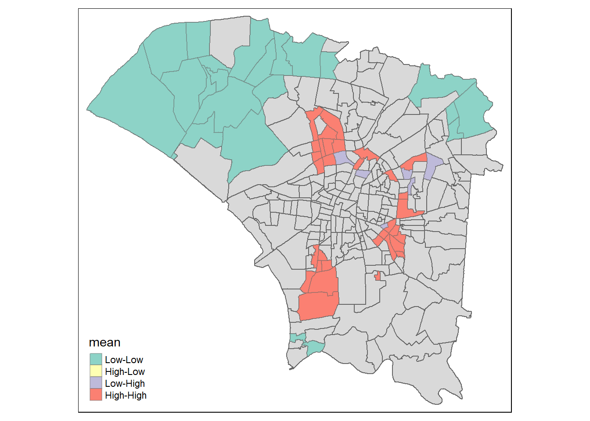
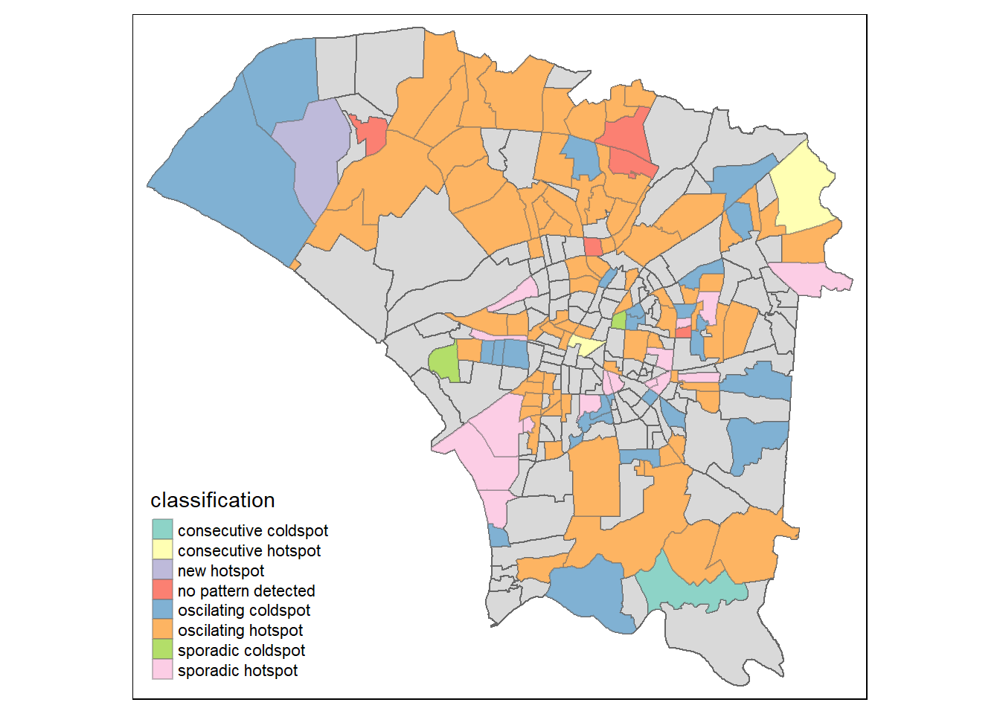

Code
pacman:: p_load(sf, sfdep, tmap, tidyverse, readxl, spdep, dplyr, lubridate, plotly, kendall, spacetime)Dengue Hemorrhagic Fever (in short dengue fever) is one of the most widespread mosquito-borne diseases in the most tropical and subtropical regions. It is an acute disease caused by dengue virus infection which is transmitted by female Aedes aegypti and Aedes albopictus mosquitoes. In 2015, Taiwan had recorded the most severe dengue fever outbreak with more than 43,000 dengue cases and 228 deaths. Since then, the annual reported dengue fever cases were maintained at the level of not more than 200 cases. However, in 2023, Taiwan recorded 26703 dengue fever cases. Figure below reveals that more than 25,000 cases were reported at Tainan City.
As a curious geospatial analytics green horn, you are interested to discover:
if the distribution of dengue fever outbreak at Tainan City, Taiwan are independent from space and space and time. If the outbreak is indeed spatial and spatio-temporal dependent, then, you would like to detect where are the clusters and outliers, and the emerging hot spot/cold spot areas.
The specific tasks of this take-home exercise are as follows:
Using appropriate function of sf and tidyverse, preparing the following geospatial data layer: a study area layer in sf polygon features. It must be at village level and confined to the D01, D02, D04, D06, D07, D08, D32 and D39 counties of Tainan City, Taiwan. a dengue fever layer within the study area in sf point features. The dengue fever cases should be confined to epidemiology week 31-50, 2023. a derived dengue fever layer in spacetime s3 class of sfdep. It should contain, among many other useful information, a data field showing number of dengue fever cases by village and by epidemiology week. Using the extracted data, perform global spatial autocorrelation analysis by using sfdep methods. Using the extracted data, perform local spatial autocorrelation analysis by using sfdep methods. Using the extracted data, perform emerging hotspot analysis by using sfdep methods. Describe the spatial patterns revealed by the analysis above.
Loading the Taiwan Dengue dataset
Loading the Taiwan Village dataset,
Reading layer `TAINAN_VILLAGE' from data source
`C:\AloysiusCedric\IS415-GAA\Take-home_Ex\Take-home_Ex02\data\geospatial'
using driver `ESRI Shapefile'
Simple feature collection with 649 features and 10 fields
Geometry type: POLYGON
Dimension: XY
Bounding box: xmin: 120.0269 ymin: 22.88751 xmax: 120.6563 ymax: 23.41374
Geodetic CRS: TWD97Inspecting the taiwan dataset
Coordinate Reference System:
User input: TWD97
wkt:
GEOGCRS["TWD97",
DATUM["Taiwan Datum 1997",
ELLIPSOID["GRS 1980",6378137,298.257222101,
LENGTHUNIT["metre",1]]],
PRIMEM["Greenwich",0,
ANGLEUNIT["degree",0.0174532925199433]],
CS[ellipsoidal,2],
AXIS["geodetic latitude (Lat)",north,
ORDER[1],
ANGLEUNIT["degree",0.0174532925199433]],
AXIS["geodetic longitude (Lon)",east,
ORDER[2],
ANGLEUNIT["degree",0.0174532925199433]],
USAGE[
SCOPE["Horizontal component of 3D system."],
AREA["Taiwan, Republic of China - onshore and offshore - Taiwan Island, Penghu (Pescadores) Islands."],
BBOX[17.36,114.32,26.96,123.61]],
ID["EPSG",3824]]Our data set is in EPSG: 3824.
We are only going to use the village data from the following Tainan counties: D01, D02, D04, D06, D07, D08, D32 and D39
Visualising the village dataset that is confined to the Tainan counties of D01, D02, D04, D06, D07, D08, D32 and D39.
Rows: 106,861
Columns: 26
$ 發病日 <date> 1998-01-02, 1998-01-03, 1998-01-13, 1998-01-15, 19…
$ 個案研判日 <chr> "None", "None", "None", "None", "None", "None", "No…
$ 通報日 <date> 1998-01-07, 1998-01-14, 1998-02-18, 1998-01-23, 19…
$ 性別 <chr> "男", "男", "男", "男", "男", "男", "男", "女", "女…
$ 年齡層 <chr> "40-44", "30-34", "55-59", "35-39", "55-59", "20-24…
$ 居住縣市 <chr> "屏東縣", "屏東縣", "宜蘭縣", "高雄市", "宜蘭縣", "…
$ 居住鄉鎮 <chr> "屏東市", "東港鎮", "宜蘭市", "苓雅區", "五結鄉", "…
$ 居住村里 <chr> "None", "None", "None", "None", "None", "None", "No…
$ 最小統計區 <chr> "A1320-0136-00", "A1303-0150-00", "A0201-0449-00", …
$ 最小統計區中心點X <chr> "120.505898941", "120.453657460", "121.751433765", …
$ 最小統計區中心點Y <chr> "22.464206650", "22.466338948", "24.749214667", "22…
$ 一級統計區 <chr> "A1320-04-008", "A1303-09-007", "A0201-23-006", "A6…
$ 二級統計區 <chr> "A1320-04", "A1303-09", "A0201-23", "A6408-10", "A0…
$ 感染縣市 <chr> "None", "None", "None", "None", "None", "None", "No…
$ 感染鄉鎮 <chr> "None", "None", "None", "None", "None", "None", "No…
$ 感染村里 <chr> "None", "None", "None", "None", "None", "None", "No…
$ 是否境外移入 <chr> "否", "是", "是", "否", "否", "是", "否", "否", "是…
$ 感染國家 <chr> "None", "None", "None", "None", "None", "None", "No…
$ 確定病例數 <dbl> 1, 1, 1, 1, 1, 1, 1, 1, 1, 1, 1, 1, 1, 1, 1, 1, 1, …
$ 居住村里代碼 <chr> "None", "None", "None", "None", "None", "None", "No…
$ 感染村里代碼 <chr> "None", "None", "None", "None", "None", "None", "No…
$ 血清型 <chr> "None", "第二型", "None", "None", "None", "None", "…
$ 內政部居住縣市代碼 <chr> "10013", "10013", "10002", "64", "10002", "68", "65…
$ 內政部居住鄉鎮代碼 <chr> "1001301", "1001303", "1000201", "6400800", "100020…
$ 內政部感染縣市代碼 <chr> "None", "None", "None", "None", "None", "None", "No…
$ 內政部感染鄉鎮代碼 <chr> "None", "None", "None", "None", "None", "None", "No…Filtering the dengue data to only include the data from Tainan City
Filtering the dengue data to only include the columns 發病日, 最小統計區中心點X, 最小統計區中心點Y
Removing None value from x and y coor so that we can combine the x and y coor to create a geometry column
Createing a geometry column for the dengue data, so that we can intersect it with the village data.
Filter the dengue data to only include the data from 發病日 30/07/2023 to 16/12/2023 or epiweek 31 to 50 because this is our area of interest. This will speed up the data processing time by reducing the amount of data we are working with.
Getting the intersection of dengue and the village data so that we can get the dengue data that is within the village boundary
Visualising the village and final dengue data onto a map
The diagram above shows that our dengue data is within the village boundary and most of the dengue cases are concentrated in the city center.However, this is just a preliminary visualization, we will perform a more detailed analysis to understand the spatial distribution of the dengue cases in Tainan City.
The code below will get all the dengue observations data that are within the village boundary
Simple feature collection with 18817 features and 22 fields
Geometry type: POLYGON
Dimension: XY
Bounding box: xmin: 120.0627 ymin: 22.89401 xmax: 120.2925 ymax: 23.09144
Geodetic CRS: TWD97
First 10 features:
VILLCODE.x COUNTYNAME.x TOWNNAME.x VILLNAME.x VILLENG.x COUNTYID.x
1 67000350032 臺南市 安南區 青草里 Qingcao Vil. D
1.1 67000350032 臺南市 安南區 青草里 Qingcao Vil. D
2 67000270011 臺南市 仁德區 保安里 Bao'an Vil. D
2.1 67000270011 臺南市 仁德區 保安里 Bao'an Vil. D
2.2 67000270011 臺南市 仁德區 保安里 Bao'an Vil. D
2.3 67000270011 臺南市 仁德區 保安里 Bao'an Vil. D
2.4 67000270011 臺南市 仁德區 保安里 Bao'an Vil. D
2.5 67000270011 臺南市 仁德區 保安里 Bao'an Vil. D
2.6 67000270011 臺南市 仁德區 保安里 Bao'an Vil. D
2.7 67000270011 臺南市 仁德區 保安里 Bao'an Vil. D
COUNTYCODE.x TOWNID.x TOWNCODE.x NOTE.x 發病日 VILLCODE.y COUNTYNAME.y
1 67000 D06 67000350 <NA> 2023-09-14 67000350032 臺南市
1.1 67000 D06 67000350 <NA> 2023-10-12 67000350032 臺南市
2 67000 D32 67000270 <NA> 2023-08-04 67000270011 臺南市
2.1 67000 D32 67000270 <NA> 2023-09-10 67000270011 臺南市
2.2 67000 D32 67000270 <NA> 2023-09-11 67000270011 臺南市
2.3 67000 D32 67000270 <NA> 2023-09-16 67000270011 臺南市
2.4 67000 D32 67000270 <NA> 2023-09-19 67000270011 臺南市
2.5 67000 D32 67000270 <NA> 2023-09-20 67000270011 臺南市
2.6 67000 D32 67000270 <NA> 2023-09-27 67000270011 臺南市
2.7 67000 D32 67000270 <NA> 2023-09-29 67000270011 臺南市
TOWNNAME.y VILLNAME.y VILLENG.y COUNTYID.y COUNTYCODE.y TOWNID.y
1 安南區 青草里 Qingcao Vil. D 67000 D06
1.1 安南區 青草里 Qingcao Vil. D 67000 D06
2 仁德區 保安里 Bao'an Vil. D 67000 D32
2.1 仁德區 保安里 Bao'an Vil. D 67000 D32
2.2 仁德區 保安里 Bao'an Vil. D 67000 D32
2.3 仁德區 保安里 Bao'an Vil. D 67000 D32
2.4 仁德區 保安里 Bao'an Vil. D 67000 D32
2.5 仁德區 保安里 Bao'an Vil. D 67000 D32
2.6 仁德區 保安里 Bao'an Vil. D 67000 D32
2.7 仁德區 保安里 Bao'an Vil. D 67000 D32
TOWNCODE.y NOTE.y week geometry
1 67000350 <NA> 37 POLYGON ((120.1176 23.08387...
1.1 67000350 <NA> 41 POLYGON ((120.1176 23.08387...
2 67000270 <NA> 31 POLYGON ((120.2304 22.93544...
2.1 67000270 <NA> 37 POLYGON ((120.2304 22.93544...
2.2 67000270 <NA> 37 POLYGON ((120.2304 22.93544...
2.3 67000270 <NA> 37 POLYGON ((120.2304 22.93544...
2.4 67000270 <NA> 38 POLYGON ((120.2304 22.93544...
2.5 67000270 <NA> 38 POLYGON ((120.2304 22.93544...
2.6 67000270 <NA> 39 POLYGON ((120.2304 22.93544...
2.7 67000270 <NA> 39 POLYGON ((120.2304 22.93544...Here we group the data by the village and then summarize the number of dengue cases in each village. This will give us the total number of dengue cases in each village.
This will greatly reduce the time it takes to load the data in the future.
First, we will read the data from the rds file
The code below will generate a choropleth map of the number of dengue cases in each village
From the map above, we can see that the number of dengue cases is concentrated in the city center. With some villages having a high number of dengue cases and some having a low number of dengue cases. The next section will perform a spatial autocorrelation analysis to determine if the spatial distribution of the dengue cases is random or if there is a clustering or dispersed pattern.
We will be performing spatial auto correlation analysis to asses if the spatial patterns are randomly distributed or having a clustering/ dispersed pattern.
The global spatial autocorrelation analysis will be performed using the sfdep package, using the Moran’s I statistic.
Simple feature collection with 249 features and 4 fields
Geometry type: GEOMETRY
Dimension: XY
Bounding box: xmin: 120.0627 ymin: 22.89401 xmax: 120.2925 ymax: 23.09144
Geodetic CRS: TWD97
# A tibble: 249 × 5
nb wt VILLENG.x total_cases geometry
* <nb> <list> <chr> <int> <POLYGON [°]>
1 <int [5]> <dbl [5]> Andong Vil. 67 ((120.2164 23.0404, 120.2154 23.…
2 <int [5]> <dbl [5]> Anfu Vil. 311 ((120.1932 23.0294, 120.1929 23.…
3 <int [7]> <dbl [7]> Anhe Vil. 73 ((120.2258 23.04424, 120.2219 23…
4 <int [3]> <dbl [3]> Ankang Vil. 97 ((120.2269 23.01413, 120.2274 23…
5 <int [4]> <dbl [4]> Anqing Vil. 111 ((120.2113 23.04414, 120.2111 23…
6 <int [3]> <dbl [3]> Anshun Vil. 34 ((120.2136 23.05601, 120.2136 23…
7 <int [8]> <dbl [8]> Anxi Vil. 110 ((120.2123 23.03689, 120.212 23.…
8 <int [5]> <dbl [5]> Bao'an Vil. 19 ((120.2304 22.93544, 120.2301 22…
9 <int [6]> <dbl [6]> Beihua Vil. 82 ((120.2034 23.00257, 120.2032 23…
10 <int [4]> <dbl [4]> Beimen Vil. 249 ((120.2176 23.02032, 120.2173 23…
# ℹ 239 more rows
Moran I test under randomisation
data: x
weights: listw
Moran I statistic standard deviate = 12.062, p-value < 2.2e-16
alternative hypothesis: greater
sample estimates:
Moran I statistic Expectation Variance
0.440989474 -0.004032258 0.001361217 The test result shows that the Moran’s I value is 0.2 and the p-value is 0.001. This indicates that there is a significant spatial autocorrelation in the number of dengue cases in Tainan City, in our interest of village studies.
However, this is not sufficient enough, the test should be conducted in permutation
Monte-Carlo simulation of Moran I
data: x
weights: listw
number of simulations + 1: 100
statistic = 0.44099, observed rank = 100, p-value < 2.2e-16
alternative hypothesis: two.sidedThe global Moran’s I value is 0.2 and the p-value is 0.001. This indicates that there is a significant spatial autocorrelation in the number of dengue cases in Tainan City, in our interest of village studies. This results is consistent with the previous test.
#9.0 Local Spatial Autocorrelation Analysis
We will now perform local spatial autocorrelation analysis to identify the clusters and outliers in the number of dengue cases in Tainan City. We will be using the sfdep package to perform the local spatial autocorrelation analysis.This analysis will go into the localised spatial patterns of the dengue cases in our interest of study.
tmap_mode("plot")
m1 = tm_shape(lisa) +
tm_fill("ii") +
tm_borders(alpha = 0.5) +
tm_view(set.zoom.limits = c(6,8)) +
tm_layout(main.title = "local Moran's I of GDPPC",
main.title.size = 0.8)
m2= tm_shape(lisa) +
tm_fill("p_ii",
breaks = c(0, 0.001, 0.01, 0.05, 1),
labels = c("0.001", "0.01", "0.05", "Not sig")) +
tm_borders(alpha = 0.5) +
tm_layout(main.title = "p-value of local Moran's I",
main.title.size = 0.8)
tmap_arrange(m1, m2)Interpreting Local Moran’s I (“ii”) together with p-value (“p_ii”) map, we can identify the following spatial patterns:
There are many Clusters of villages which are associated with relatively high values of surrounding villages, but these values are mostly not significant except for a few villages.
There are many outliers of villages which are associated with relatively low values of surrounding villages, these results are significant at the 0.05 level.
The map also shows an outlier indicated in orange. This outlier is significant at the 0.05 level. This indicates that there are some villages that have a low number of dengue cases and are surrounded by villages with a high number of dengue cases.
##9.3 Visualising LISA map
LISA map is a categorical map showing outliers and clusters. There are two types of outliers namely: High-Low and Low-High outliers. Likewise, there are two type of clusters namely: High-High and Low-Low clusters. In fact, LISA map is an interpreted map by combining local Moran’s I of geographical areas and their respective p-values.
In lisa sf data.frame, we can find three fields contain the LISA categories. They are mean, median and pysal. In general, classification in mean will be used as shown in the code chunk below.

From the graph above, we can see a few High-High and Low-Low clusters. This indicates that there are some villages that have a high number of dengue cases and some villages that have a low number of dengue cases. The next section will perform an emerging hotspot analysis to identify the emerging hot spot/cold spot areas in Tainan City.
The villages shaded in turquoise is made up of “low-low” clusters, forming clusters of low numbers of dengue cases.These are usually located at the boundary of the city.
While the villages in red make up significant clusters of “high-high” values, implying the clusters are mostly high number of dengue cases
There are some villages in purple, showing that they are villages with low numbers of dengue cases, surrounding the villages with higher numbers of dengue cases.
#10.0 Emerging Hotspot Analysis (EHSA)
Emerging hotspot analysis is a method used to identify the emerging hot spot/cold spot areas in a study area. We will be using the sfdep package to perform the emerging hot spot analysis.
This is useful in our case to determine the possible hot spot of dengue cases in Tainan City so that the local government can take preventive measures to reduce the spread of dengue fever.
This study also allows us to uncover patterns of these hot-spots and cold spot, so as to better understand the spatial distribution of dengue cases in Tainan City.
The code below will group the dengue data that with have according to the TOWNNAME, VILLNAME, week and then summarise them by the total number of occurances which is the cases
Storing the dengue_epi into an rds file to reduce computational time
The data is then merged with the village data for the village data to contain the cases count
We will then select the columns VILLCODE, week and cases from the merge_village data
We will then proceed with the data processing needed to create a space time cube. Considering all possible permutations of VILLCODE and week, we will then merge the data with the original dataframe and replace missing total_cases with NA values to 0. The final records should have 258 x 20 = 5160 records.
unique_villcodes <- unique(village$VILLCODE)
unique_weeks <- rep(31:50)
all_combinations <- expand.grid(VILLCODE = unique_villcodes, week = unique_weeks)
# Convert VILLCODE to character type (if it's not already)
all_combinations$VILLCODE <- as.character(all_combinations$VILLCODE)
# Merge with the original dataframe
df_merged <- merge(all_combinations, merge_village, by = c("VILLCODE", "week"), all.x = TRUE)
# Replace missing total_cases with 0
df_merged$cases = replace_na(df_merged$cases, 0)We will then convert the df_merged to a tibble so that the spacetime function can be performed
The code below performs the spacetime function
Checking if the dataset is indeed a spacetime cube. The code below will return TRUE if the dataset is a spacetime cube
As usual, we will need to derive a spatial weight matrix before we can compute local Gi* statistics. Code chunk below will be used to derive a spatial weight matrix by using sfdep functions and tidyverse approach.
This section will focus on calculatin gthe Gi*
The results of gi_stars will be displayed below
# A tibble: 5,160 × 14
# Groups: week [20]
VILLCODE week cases geometry nb wt gi_star e_gi
<chr> <int> <int> <GEOMETRY [°]> <lis> <lis> <dbl> <dbl>
1 67000350032 31 0 GEOMETRYCOLLECTION EMPTY <int> <dbl> -0.815 0.00232
2 67000270011 31 1 POINT (120.2413 22.92115) <int> <dbl> 0.281 0.00375
3 67000370005 31 0 GEOMETRYCOLLECTION EMPTY <int> <dbl> -0.463 0.00305
4 67000330004 31 0 GEOMETRYCOLLECTION EMPTY <int> <dbl> -0.256 0.00293
5 67000350028 31 0 GEOMETRYCOLLECTION EMPTY <int> <dbl> -0.895 0.00278
6 67000350030 31 0 GEOMETRYCOLLECTION EMPTY <int> <dbl> -1.10 0.00306
7 67000370009 31 0 GEOMETRYCOLLECTION EMPTY <int> <dbl> -0.895 0.00263
8 67000350017 31 0 GEOMETRYCOLLECTION EMPTY <int> <dbl> -0.745 0.00310
9 67000350049 31 0 GEOMETRYCOLLECTION EMPTY <int> <dbl> 0.420 0.00296
10 67000350018 31 0 GEOMETRYCOLLECTION EMPTY <int> <dbl> -0.907 0.00301
# ℹ 5,150 more rows
# ℹ 6 more variables: var_gi <dbl>, p_value <dbl>, p_sim <dbl>,
# p_folded_sim <dbl>, skewness <dbl>, kurtosis <dbl>The Gi* allows us to conduct trend analysis using the Mann-Kendall test. The code chunk below uses location Hainan Vil. , D06
Next, we plot the result by using ggplot2 functions
From the visual above, we can conclude that there are 2 hot-spots located at the beginning and the end of our epidemiology week of study.
We can also perform an interactive plot using the plotly package
In the code above, the arguments:
x is the spacetime object which is dengue_st
.var is the variable we want to test which is cases
k = nsim is the last simulations we want to stop run (we start at the 0th simulation), we will be running the simulation 100 times
We will then store the ehsa into a rds file to reduce computational time
# A tibble: 6 × 4
location tau p_value classification
<chr> <dbl> <dbl> <chr>
1 67000350032 0.411 0.0125 oscilating coldspot
2 67000270011 0.358 0.0297 oscilating coldspot
3 67000370005 0.579 0.000406 oscilating hotspot
4 67000330004 0.421 0.0104 oscilating hotspot
5 67000350028 0.537 0.00105 new hotspot
6 67000350030 0.526 0.00132 oscilating hotspot From the visualization, it seems like all villages have different pattern detected in terms of distribution. How significant is this result though?
To examine the significance of the concluded pattern for all the villages, we need to compare it with its p value. We can visualize the EHSA and it’s p-value.
Firstly, we derive the EHSA of each village by using left_join() from the dplyr package to insert the EHSA values to each village in our study area so that we can plot the EHSA and its p-value.
Then, we use tmap functions to create the choropleth map.

The most number of cases with pattern belong to the oscillating hot spots followed by oscillating cold spots class. Oscillating hotspot are villages witnessing regular fluctuations in dengue cases with predictable peaks while oscillating coldspot are villages with consistent dengue case fluctuations, but at lower levels compared to busier regions.
The data seems to exhibit many different pattern classes. The different pattern explaination are as follows:
Consecutive Coldspot: villages consistently experiencing low dengue cases over an extended period, often without significant fluctuations.
Sporadic Coldspot: villages in potentially busy regions experiencing inconsistent and sporadic dengue cases.
Sporadic Hotspot: villages witnessing occasional but significant spikes in dengue cases.
No Pattern Detected: villages where no clear pattern in dengue cases is discernible over time.
This take home exercise has been a great learning experience. Not everytime we can have the opporunity to work with data so close to solving real world problem. The data may seem simple but it taught me not to judge a book by its cover because there are many steps involved in the data wrangling phased.
This take home exercise allowed me to analyses patterns and its significance at a much deeper level which I think is important in today’s day and age. I am also confident that my data cleaning skills have improved quite abit
Regarding the findings, we can see that high number dengue cases are located within the city centre with High-High and low number of dengue clusters can be found at the boundary of the city. This is important information for the local government to take preventive measures to reduce the spread of dengue fever. The Government should also take note of the emerging hot spot/cold spot areas in Tainan City that were identified above so that they can take preventive measures to reduce the occurrence of it.